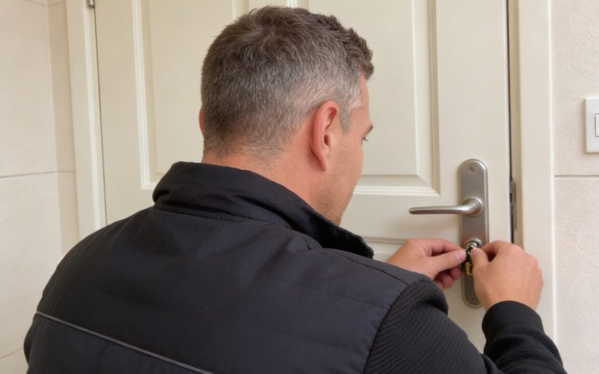
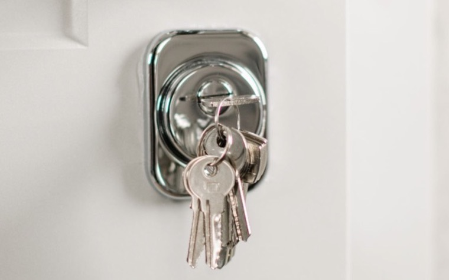

Ich gehe selbst ans Telefon
Wenn es klingelt, hebe ich ab. Sagen Sie mir, ob die Tür zugefallen oder abgeschlossen ist und wo Sie stehen – und wenn drinnen etwas Eile macht, gleich dazu.

Ausgesperrt in Karlsruhe?
Die Wohnungstür ist zugefallen, der Schlüssel liegt innen auf der Kommode. Oder Sie stehen am Auto und sehen Ihren Schlüssel auf dem Beifahrersitz. Der Moment fühlt sich groß an. Handwerklich ist er meistens klein.
Wenn Sie in Karlsruhe ausgesperrt sind, brauchen Sie keinen Vortrag, sondern eine Nummer: 0162 3253305. Sie landen damit nicht in einer Warteschleife und nicht bei einer Zentrale, die Ihren Fall notiert und weiterreicht. Sie landen bei mir.
Ich bin Patrick Götz, Sicherheitstechniker und Fachmann für Türöffnungen. Mein Betrieb sitzt in Karlsruhe-Oberreut, mein Diensthandy ist Montag bis Sonntag von 0:00 bis 24:00 Uhr an.
Zwischen Ihnen und mir sitzt niemand: kein Callcenter, keine Warteschleife, keine Vermittlung, die Ihren Auftrag weitergibt. Was am Telefon vereinbart wird, gilt – so läuft ein Einsatz bei mir ab.
Wenn es klingelt, hebe ich ab. Sagen Sie mir, ob die Tür zugefallen oder abgeschlossen ist und wo Sie stehen – und wenn drinnen etwas Eile macht, gleich dazu.

Ich gebe keinen Auftrag weiter. Wen Sie am Telefon hören, den sehen Sie danach vor Ihrer Wohnung: dieselbe Stimme, dasselbe Gesicht.

Kein Tarifrechner, keine Zentrale, kein Rückruf, weil ich erst irgendwo nachfragen müsste. Was Ihr Fall kostet, hören Sie direkt von mir.
Wer „Schlüsseldienst Karlsruhe“ in die Suche tippt, sieht zuerst sehr kleine Zahlen. Ich erkläre Ihnen lieber meine, als über andere zu reden.
Eine Tür, die nur zugefallen ist, öffne ich ab 90 €; die Anfahrt ist darin enthalten. Wurde abgeschlossen, beginnt es bei 120 € – am verriegelten Schloss ist der Aufwand ein anderer. Was daraus für Ihren Fall wird, entscheiden zwei Dinge: Ihre Tür und die Uhrzeit. Den verbindlichen Betrag hören Sie von mir am Telefon, bevor ich losfahre.
Anfahrt ist eingerechnet.
Am verriegelten Schloss ist der Aufwand ein anderer.
Türen fallen selten zu einer bequemen Uhrzeit ins Schloss. Deshalb ist mein Diensthandy durchgehend an – an sieben Tagen der Woche, ohne Sprechzeiten und ohne Bandansage.
Nachts läuft es genauso wie tagsüber: Sie beschreiben mir Ihre Tür, Sie hören Betrag und Ankunftszeit, und erst danach fahre ich los. Auch was der Einsatz zu Ihrer Uhrzeit kostet, gehört in dieses eine Gespräch – nicht auf die Rechnung hinterher.
Mein Ziel an jeder Tür ist, dass hinterher nichts von meiner Arbeit zu sehen ist. Ein Zylinder, der noch funktioniert, bleibt drin – auch dann, wenn ich schon davorstehe. Ist der Schlüssel abhanden oder das Schloss defekt, sage ich Ihnen, was ich sehe, und Sie entscheiden in Ruhe. Ein Schlosswechsel in Karlsruhe ist kein Automatismus nach einer Öffnung, sondern eine eigene Entscheidung.
Zugefallene und abgeschlossene Türen, auch wenn der Schlüssel verschwunden oder im Zylinder abgebrochen ist.
Jede Stunde des Tages, an jedem Tag der Woche, auch am Feiertag.
Wenn der Autoschlüssel im verschlossenen Fahrzeug liegt. Ich öffne Ihr Auto so schonend, wie es technisch geht.
Wenn ein Safe verschlossen bleibt. Nennen Sie mir am Telefon Modell und Verschlussart, dann sage ich Ihnen, was daran möglich ist.
Ein neuer Schließzylinder bei defektem Schloss oder wenn ein Schlüssel im Umlauf ist, der Ihnen nicht gehört. Den Wechsel vermeide ich, wo er technisch nicht nötig ist.
Wenn nicht das Schloss das Problem ist, sondern die Tür selbst.
Beratung und Einbau von Zusatzschlössern. Ich sage Ihnen vorher, was an Ihrer Tür sinnvoll ist und was nur Geld kostet.
Nach einem Aufbruch muss die Tür wieder verschließbar sein. Darum kümmere ich mich, wenn ich vor Ort bin.
Die Unterlagen gehen von mir aus an Ihre Versicherung, damit die Kostenübernahme geprüft werden kann.
Zylinder & Sicherheitstechnik von Herstellern, denen ich vertraue
Einsatzgebiet
Vom Schloss aus laufen 32 Straßen strahlenförmig nach außen – daher der Beiname Fächerstadt. Praktisch heißt das: Die Stadt zieht sich weit auseinander, im Westen bis an den Rhein, im Osten hinauf an den Schwarzwaldrand. Zwischen dem Marktplatz auf knapp 115 Metern und dem höchsten Punkt auf gut 323 Metern liegen mehr als 200 Höhenmeter.
Deshalb ist meine erste Frage am Telefon immer dieselbe: Welcher Stadtteil? Nennen Sie mir dazu Straße, Hausnummer und Etage – und ob Ihre Haustür an mehreren Punkten verriegelt. Dann liegt das passende Werkzeug im Auto, bevor ich vorfahre. Die Route ist danach mein Teil der Arbeit, nicht Ihrer.
Mein Betrieb sitzt in Oberreut: Otto-Wels-Str. 17, 76189 Karlsruhe.
Ettlingen und Bruchsal sind keine Karlsruher Stadtteile, sondern eigene Städte im Landkreis – und haben deshalb ihre eigene Seite: Schlüsseldienst Ettlingen und Schlüsseldienst Bruchsal. Die Nummer bleibt dieselbe.
„Haben ihn wegen einer Zugefallen Wohnungstür gerufen. War super schnell da, sehr freundlich und absolut vom Fach! Die Tür hat er ohne Beschädigung super schnell geöffnet. Preislich auch absolut super. Jeder Zeit wieder absolut zum empfehlen!"
„Sofort vor Ort gewesen und mich von der Kälte ins Warme gebracht. Vielen Dank für so ein schnelles Handeln zu einem absolut fairen Preis. Sollte ich je wieder einen Schlüsseldienst brauchen, weiß ich wen ich anrufe."
„Nachdem ich mich ausgeschlossen habe, rief ich beim Schlüsseldienst an. Er war innerhalb kurzer Zeit da u konnte die Tür schnell u professionell öffnen. Kann ich nur weiterempfehlen, kompetent und sehr freundlich"
„Super nett, sehr schnell vor Ort top Preise kann man wirklich nichts sagen. Obwohl Tür schlecht und kaputt war in 5 Minuten offen nur zu empfehlen."
„Super Service,sehr nett und freundlich 👍 Er war sehr schnell da und hat seine Arbeit sehr schnell und gut gemacht. Preis Leistung ist sehr gut."
„Meine Tür war verschlossen, und ich befürchtete, dass die Behebung des Problems lange dauern würde; doch er öffnete sie schnell und ohne jegliche Beschädigung. Der Service war schnell, effizient und sehr zuverlässig."
Er führt über diese Nummer. Zwei Auskünfte bekommen Sie sofort, den Betrag und die Zeit. Danach sitze ich im Auto.
0162 3253 305Kein Notfall, sondern eine Planung? Für ein neues Schloss, eine Zusatzsicherung oder eine Frage zur Sicherheitstechnik erreichen Sie mich auch über WhatsApp – ich antworte, sobald ich nicht an einem Schloss stehe. Klemmt es dagegen genau jetzt: bitte anrufen. Ein Notfall gehört nicht in einen Chat.
Schlüsseldienst Götz · Patrick Götz · Otto-Wels-Str. 17, 76189 Karlsruhe · 0162 3253305 · Montag bis Sonntag, 0:00 bis 24:00 Uhr
Für eine zugefallene Tür gilt: ab 90 €, Anfahrt eingerechnet. Bei einer abgeschlossenen Tür beginnt es bei 120 €. Wie hoch Ihr Betrag am Ende ausfällt, bestimmen Ihre Tür und die Uhrzeit – verbindlich nenne ich ihn Ihnen im Telefonat, vor der Fahrt und nicht danach.
Weil in meinem Betrag die Fahrt zu Ihnen steckt, die Bereitschaft, sofort loszufahren, und Werkzeug, mit dem Ihre Tür heil bleibt. Und weil Sie meinen Betrag vor der Fahrt hören, nicht erst im Türrahmen. Eine Zahl, die erst an der Wohnungstür entsteht, kennen Sie eben erst dort.
Ja, beides. Montag bis Sonntag von 0:00 bis 24:00 Uhr, und 0162 3253305 ist mein Diensthandy, kein Callcenter. Was der Einsatz zu Ihrer Uhrzeit kostet, sage ich Ihnen im Gespräch, bevor ich losfahre – dann entscheiden Sie in Kenntnis der Summe, ob ich kommen soll.
Das hängt davon ab, wo in der Stadt Sie stehen und wo ich in diesem Moment bin. Eine ehrliche Antwort darauf gibt Ihnen keine Website, sondern nur ich am Telefon: Ich sage Ihnen im Gespräch, wann ich bei Ihnen sein kann – bevor Sie sich entscheiden müssen.
Ja, es gibt nur die eine: 0162 3253305 – für jeden Stadtteil. Für zwei Stadtteile stehen die örtlichen Angaben zusätzlich auf einer eigenen Seite: Schlüsseldienst in Karlsruhe-Durlach und Schlüsseldienst in Neureut.
Mein Ziel ist die Öffnung ohne Schaden; aufgebohrt wird nur, was anders nicht aufgeht. Ein Zylinder, der noch zuverlässig arbeitet, bleibt drin. Nötig wird ein neuer meist erst, wenn ein Schlüssel abhandengekommen ist oder das Schloss defekt ist – die Entscheidung darüber liegt bei Ihnen, nicht bei mir.
Ja. Neben Türöffnung, Schlüsselnotdienst, Schlosswechsel, Türreparatur, Mehrfachverriegelung und Einbruchschaden-Sicherung gehören KFZ-Öffnung und Tresoröffnung zu meinen Leistungen. Beschreiben Sie mir Ihren Fall am Telefon, dann sage ich Ihnen, was möglich ist.
Mit Karte: Das Lesegerät ist bei jedem Einsatz dabei, bar geht natürlich auch. Die Rechnung weist die Tarife einzeln aus. Läuft eine Versicherung mit, reiche ich den Vorgang dort ein.